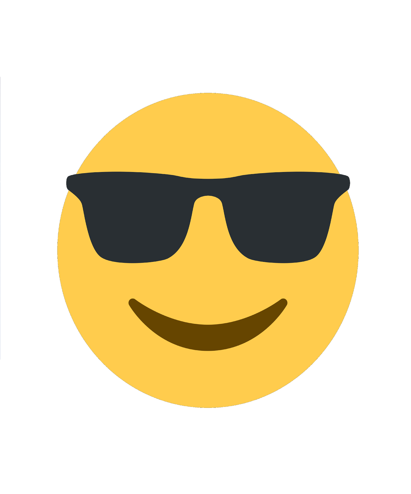

Это я после сессии поехал домой и выиграл любительский турнир по волейболу)

Лето началось не очень приятно(сессия), но я справился с этой трудностью ПОЧТИ хорошо и поехал домой, в
Гомель♥.
После Гомеля я снова приехал в Академию, чтобы 3 недели поработать в приемной комиссии.
Это было очень круто, я познакомился с новыми людьми и ПЕРВОКУРСНИКАМИ. У нас было много свободного времени,
в отличие от учебного года
и мы часто катались на Минское море и не только.
После приёмки я снова приехал в ГОМЕЛЬ, там меня заставили работать, чем я и занимался почти всё
оставшееся время до учебы, но там тоже было весело
Вот и подошло к концу моё повествование о том, как я провел лето. Я бы сказал, что я успел отдохнуть и
отдохнуть хорошо.
Спасибо за внимание(хочу 10).